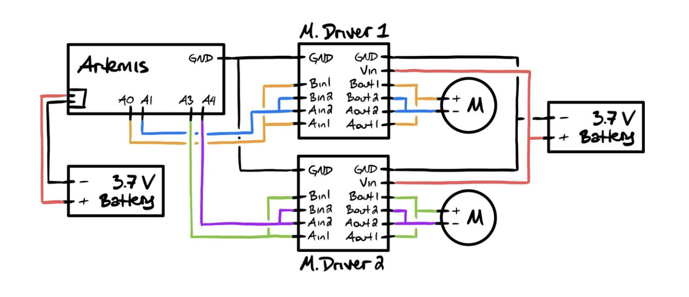
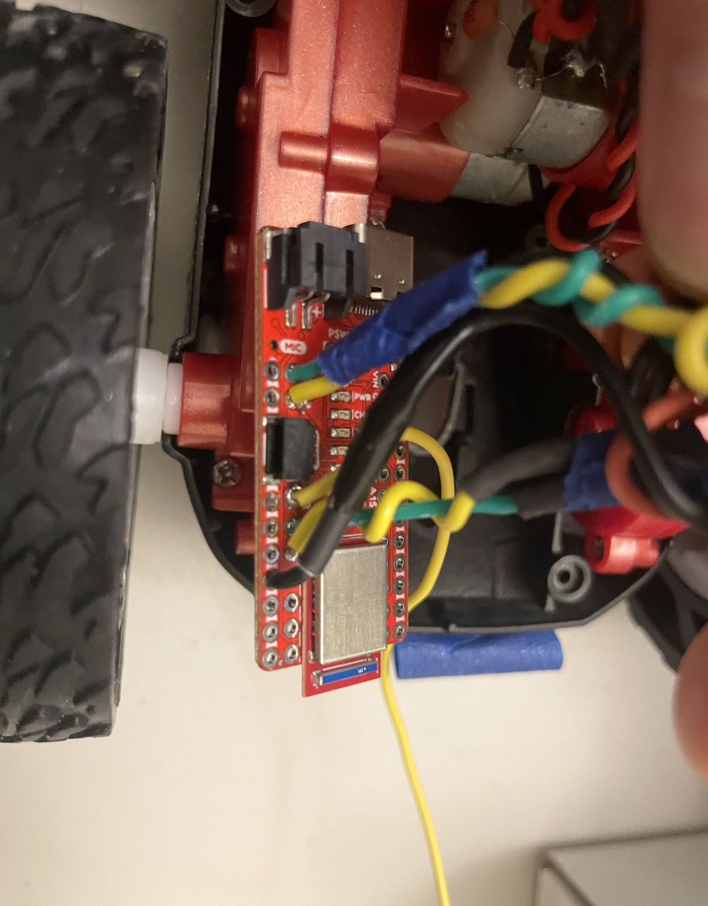
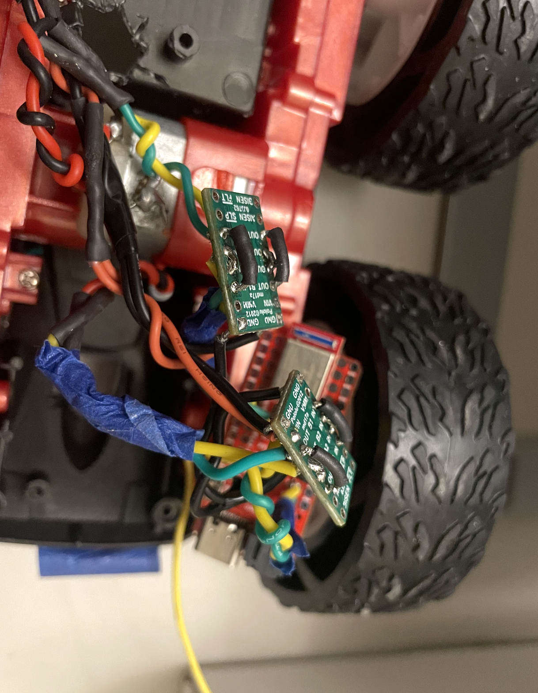
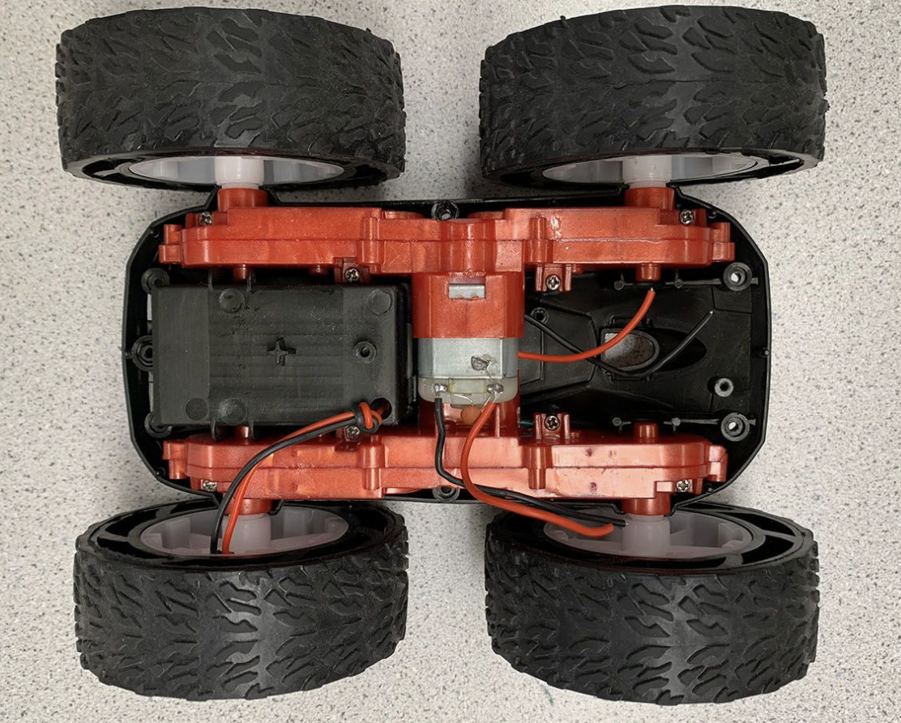
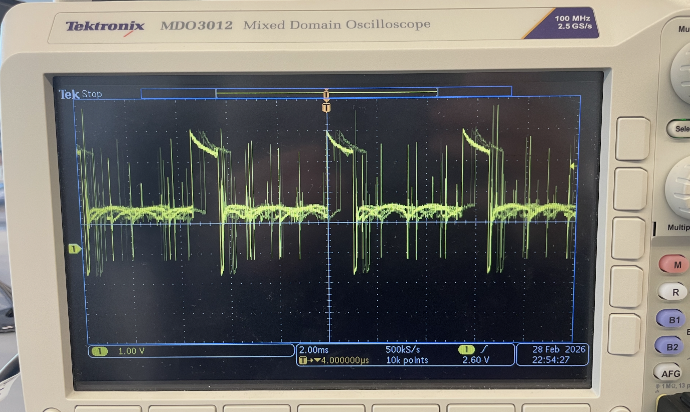

The purpose of this lab was to transition the robot from manual control to open-loop control. By the end of the lab, the car should be able to execute a pre-programmed sequence of movements using the Artemis microcontroller and two dual motor drivers.
For the prelab section, I planned out the wiring between the Artemis, two DRV8833 motor drivers, and the batteries. Each motor driver uses both channels in parallel to drive one motor, which allows higher current delivery and more reliable startup.

The figure above is adapted from Stephan W. (2024). I used Artemis pins A0, A1, A3, A4 for control and base on the datasheet provided, they all support PWM and are close to each other.


The pictures above shows connections of the pins, I soldered the H-bridge for both motor driver and PWM pins on the Artemis board. The motor drivers are mounted close to the motors to shorten high-current paths and reduce electrical noise. The Artemis and motors are powered by separate batteries(850 mAh) so that motor current spikes and voltage drops do not disrupt the microcontroller. Finally, the wiring was routed to minimize interference and clutter, with motor wires kept short and flexible stranded wire used for durability.
I first took the car apart and cut out the factory PCB, below is an after picture with no hardware installed.

The lab manual recommends using a bench power supply during initial testing because it provides a stable voltage and adjustable current limit, which makes debugging safer and easier. But my robot was already wired with a battery connector before I saw the instruction. So based on the lab instructions and other students’ setups, a reasonable configuration is to set the supply to approximately 3.7 V to match the nominal voltage of the 850 mAh Li-ion battery used later in the lab, with a current limit around 1–1.5 A. This current limit is high enough to allow the motors to start and run normally while still protecting the motor driver and wiring in case of a short or wiring mistake. Using a regulated supply also avoids voltage drops associated with partially discharged batteries and allows consistent testing conditions.
To verify that PWM was regulating the power delivered to the motor driver, I used analogWrite() to drive the motor driver input while observing the output with an oscilloscope. The probe tip was connected to the motor driver output node and the ground clip was connected to system ground. The following code was used to generate a constant PWM signal.
#define IN1 3
void setup() {
pinMode(IN1, OUTPUT);
}
void loop() {
analogWrite(IN1, 50);
delay(2000);
}

The oscilloscope waveform picture shows a repeating switching pattern between low and higher voltage levels, The pulse width corresponds to the duty cycle set by the analogWrite() command. But Because the robot had already been fully assembled and soldered before testing, the waveform contains noticeable electrical noise and voltage spikes from the environment and exposed wires. Below is the video showing the regulation.
First, To verify that the motor driver and wiring were functioning correctly, the robot was placed on its side so the wheels could spin freely forward and backward. The motor driver was powered using an external power supply as we discussed earlier, and all grounds were connected.
#define MOTOR_A_FWD 3
#define MOTOR_A_BWD 4
int speedVal = 50; // ~20% duty cycle
void setup() {
pinMode(MOTOR_A_FWD, OUTPUT);
pinMode(MOTOR_A_BWD, OUTPUT);
}
void loop() {
// FORWARD
analogWrite(MOTOR_A_FWD, speedVal);
analogWrite(MOTOR_A_BWD, 0);
delay(3000);
// STOP
analogWrite(MOTOR_A_FWD, 0);
analogWrite(MOTOR_A_BWD, 0);
delay(1500);
// REVERSE
analogWrite(MOTOR_A_FWD, 0);
analogWrite(MOTOR_A_BWD, speedVal);
delay(3000);
// STOP
analogWrite(MOTOR_A_FWD, 0);
analogWrite(MOTOR_A_BWD, 0);
delay(3000);
}After verifying a single motor, both motor drivers were connected and tested together to confirm that the robot could drive both wheels in the same direction and reverse them simultaneously. The following code was used to run both motors forward and backward:
// Motor A (left)
#define MOTOR_A_FWD 3
#define MOTOR_A_BWD 4
// Motor B (right)
#define MOTOR_B_FWD 1
#define MOTOR_B_BWD 0
int speedVal = 80;
void setup() {
pinMode(MOTOR_A_FWD, OUTPUT);
pinMode(MOTOR_A_BWD, OUTPUT);
pinMode(MOTOR_B_FWD, OUTPUT);
pinMode(MOTOR_B_BWD, OUTPUT);
}
void loop() {
// FORWARD
analogWrite(MOTOR_A_FWD, speedVal);
analogWrite(MOTOR_A_BWD, 0);
analogWrite(MOTOR_B_FWD, speedVal);
analogWrite(MOTOR_B_BWD, 0);
delay(3000);
// REVERSE
analogWrite(MOTOR_A_FWD, 0);
analogWrite(MOTOR_A_BWD, speedVal);
analogWrite(MOTOR_B_FWD, 0);
analogWrite(MOTOR_B_BWD, speedVal);
delay(3000);
}When running both motors together, the video also shows that the two wheels do not spin at the exact same rate. This is expected due to small differences in motors, gearboxes, and friction, and it causes the car to drift when driving on the ground. In a later section, I show how I addressed this by adding a calibration factor to better match the two motor speeds.
This lab gave the robot reliable sensing by integrating two ToF distance sensors and an IMU and getting them to run together without conflicts. I confirmed the sensors produced consistent measurements and set up time-stamped logging with Bluetooth transfer, creating a solid foundation for obstacle detection and future autonomous navigation.